01.10.2019
Зеленський заявив, що Україна погодила "формулу Штайнмаєра" »»»
UPD: Штайнмаєр у законі: на що погодився Київ »»»
UPD: Україна погодилася розглянути формулу Штайнмайєра ще в липні - документ »»»
UPD: У Зеленського повідомили, чому тримали у таємниці підписання "формули Штайнмаєра" »»»
Чому першими повідомили роспропагандони? - їм було вигідно. А узеленські мовчали, тому що невигідно. А точніше, cтрьомно! Логічно?
UPD: Російська мова та гроші Києва: у “ДНР” святкують “формулу Штайнмаєра” та чекають на зміну Конституції »»»
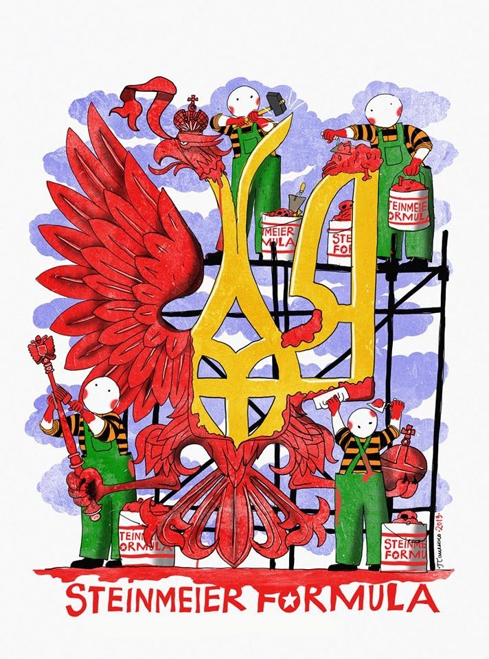
UPD: Зеленский сказал неправду: Москва показала документ, который Украина подписала в Минске »»»
UPD: Підписали в кабінеті Зеленського: Безсмертний розкрив таємницю "формули Штайнмаєра" »»»
UPD: Опубліковано документи з підписами, що засвідчують погоджену "формулу Штайнмаєра" »»»
В документі, насправді, немає ЖОДНОГО СЛОВА про виведення військ, а в разі "успішних" виборів, особливий статус ОРДЛО діятиме на ПОСТІЙНІЙ основі. Це прямий шлях до ФЕДЕРАЛІЗАЦІЇ України, чого так завзято добивається Путін!
UPD: Під Офісом Зеленського люди протестували проти "Штайнмаєра" »»»
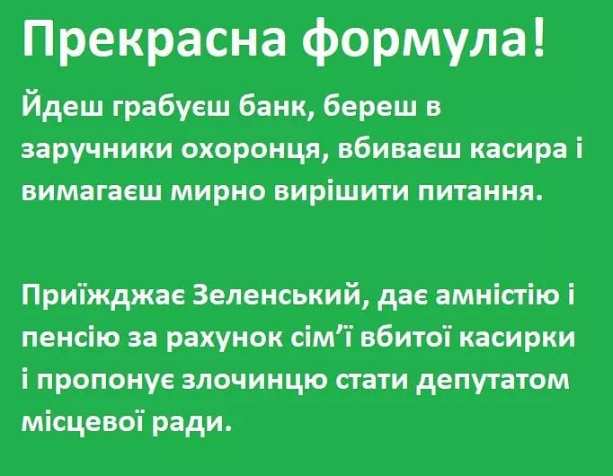
UPD: "Капкан Штайнмайєра" або ціна миру для України »»»
UPD: President Zelensky grants self-rule to Ukraine’s rebel republics - The Times »»»
UPD: "Формула Штайнмаєра" до миру на Донбасі не приведе, - Кучма »»»
Так на х@@ ж ти його тоді підписував? Чи настав час для старечого маразму?
UPD: Команда Зеленського поширює брехню про начебто підтримку "формули Штайнмайєра" п'ятим Президентом України Петром Порошенком
UPD: Зеленский отказался объяснять в Раде "формулу Штайнмайера" »»»
UPD: З’явилися перші наслідки «формули Штайнмайєра» – інвестори починають тікати з України »»»
UPD: Зеленский выполнил главное условие Путина – вывести РФ из-под удара и показать, что это гражданский конфликт »»»
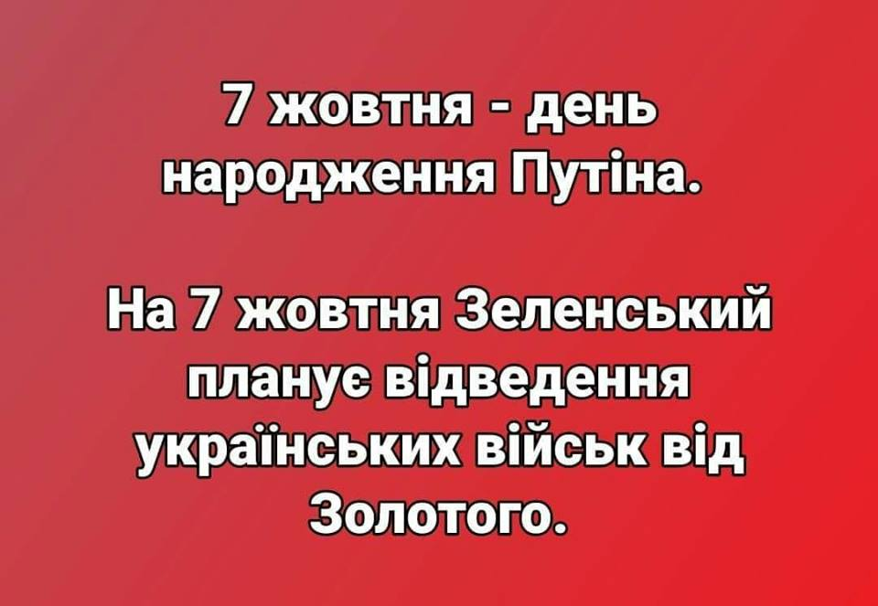
UPD: У «Слузі народу» заявили, що закон про особливий статус Донбасу буде узгоджуватися з РФ »»»
UPD: Пристайко розповів, які плани щодо Донбасу МЗС готує для Президента »»»
Ви тільки почитайте цю многахадовочку! "Нада готуватися до відвіду військ і до оборони, одночасно, якщо нас знову надурять". Як це? Бросити облаштовані позиції ворогу, відійти, а потім відвойовувати своє знову? Та вас кожного дня дурять, і тільки сліпий, чи той хто не хочить бачити, не бачить! "Стратегія Порошенка була вдалою, він зупинив агресію", але для вовочкі нада готувати інший план". Що це як не план зради?
UPD: "Або "Штайнмаєр", або ми забираємо третину пенсій, зарплат, медичне страхування!" - Шантаж від "слуг" »»»
В цьому вся політика т.з. нової влади. Повна політична імпотентція + відкрите підігрування ворогу.
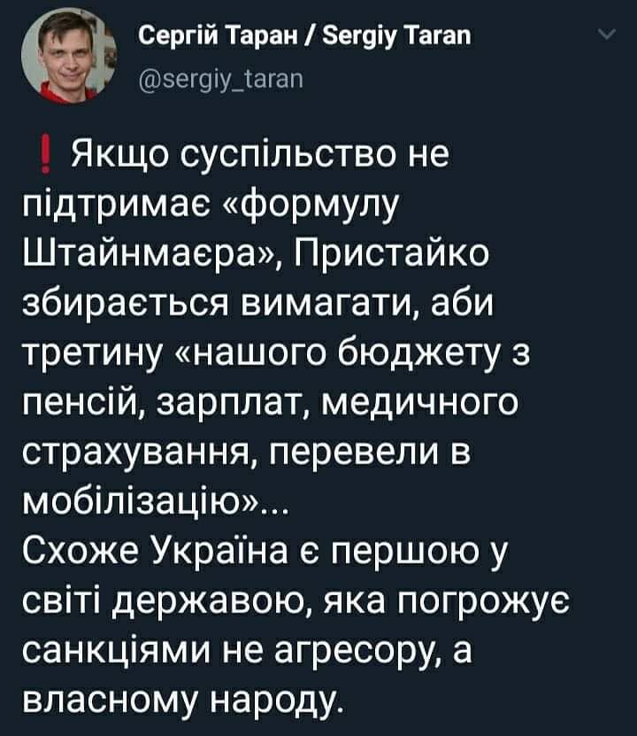
Разумков пояснив, чому іноземцям дозволять купувати землю в Україні »»»
Планується ТОТАЛЬНИЙ дерибан землі, після якого з'ясуємо, що добра половина земель України вже не українська, а належить Росії!
Українська мова не отримала фінансування від команди Зеленського »»»
02.10.2019
Компанія з орбіти Коломойського почала імпорт електроенергії з Росії »»»
Команда зелених патрійотів невпинно припиняє негативну традицію бариг-попередників, які вели бізнес з країною-окупантом! А де там наші нацжони? Щось не видно!
UPD: Герус пролобіював імпорт електроенергії з країни-агресора »»»
Ну тепер варто тільки отримати по експорту з КРИМУ хоча б 1 кВт електроенергії - і все! Україна де-факто (і де-юре) визнала Крим територією Росії адже офіційно купує у Росії кримську електроенергію! Шах і мат!
UPD: Законопроект Геруса зриває євроінтеграцію та повертає економіку в минуле »»»
UPD: Слідом за ринком електроенергії, Герус запропонував здати росіянам українську газотранспортну систему »»»
UPD: В Кабмине признали, что Украина технически не может отказаться от импорта электроэнергии из РФ »»»
Значить, з 2015 по 2019 роки могла, а тепер перестала могти?
У Верховну Раду знову пустили російських пропагандистів »»»
03.10.2019
Зеленський призначив нового секретаря РНБО: ким він був раніше »»»
UPD: Скандальний мер Луганська з 90-х: Хто такий новий секретар РНБО Олексій Данілов »»»
Те що на секретаря РНБО призначили ще одного некомпетентного в питаннях національної безпеки й оборони нефахівця з освітою ветеринара-вчителя говорить тільки про одне: зелені чоловічки ведуть країну до КАПІТУЛЯЦІЇ!
Рябошапка доручив пропрацювати амністію бойовикам та статтю про покарання за переходи в ПЦУ »»»
Рада ухвалила законопроєкт "Слуги народу" про столицю у першому читанні »»»
UPD: Новий закон про столицю передбачає взяття під контроль усієї влади у Києві »»»
Разумков закликав депутатів не “задовольняти фізіологічні потреби” у Верховній Раді »»»
73% дебілів обрали в парламент таких феєричних дегенератів, які без окремого нагадування з боку Голови ВР самі цього не розуміють!!!
Гончарук заявив, що реінтеграція і відновлення Донбасу буде за рахунок платників податків »»»
Уряд просить Вінницю призупинити використання коштів, виділених на будівництво лікарні та школи »»»
"Загалом по Україні ідеться про суму близько 4,5 мільярдів гривень". Ніяку іншу суму не нагадує?
Державіаслужба заборонила SkyUp літати з Києва на Гоа, але дозволила це компанії Коломойського »»»
Оскільки епоха бідності у нас вже скінчилась, то нефіг літати на лоукостах за 30-50 євро, тепер будемо літати на Бєніних МАУ за 300-500 євро...
Висунули ультиматум через мову: Угорщина попередила Україну »»»
Нацбанк потратил на сдерживание падения курса гривни $200 миллионов за три дня »»»
04.10.2019
У партії «Слуга народу» хочуть скасувати пільги і соціальні виплати учасникам бойових дій, якщо вони служили за контрактом »»»
UPD: “Вибачте, що ми не здохли!” – Ветерани жорстко відповіли депутатці від “Слуги народу” »»»
UPD: Ви - ніхто, панове контрактники. Ви найманці. »»»
Знайома логіка? Це не рашаЗМІ! Це логіка глави комітету ВР з питань соціальної політики та захисту прав ветеранів Галини Третьякової ("Слуга народу")
Розмови Зеленського з Путіним не будуть оприлюднені »»»
UPD: В Офісі президента знищили стенограму розмов Зеленського та Путіна? »»»
ДБР оголосило підозру Пашинському »»»
UPD: Екснардепа Пашинського взяли під варту у справі про стрілянину »»»
Отже, нова влада почала з того ж, з чого і влада Януковича - з переслідування політичних опонентів. Чим закінчить?
UPD: Племінниця Пашинського: А тепер серйозно. Для мене це особисте, тому розказую. Все почалось на Майдані... »»»
UPD: Подарунок для Путіна: арешт Пашинського може також спіткати Парубія і Турчинова »»»
Формула "хліба і видовищ" розрахована на те, щоб на деякий час відвернути увагу від "формули Штайнмайєра"?
UPD: Пашинського «саджають» за перший бойовий наказ [FB]
Хто такий Роман Труба і до чого тут Андрій Богдан [►]
05.10.2019
Українцям не знизять тарифи на комуналку: у Гончарука назвали причину »»»
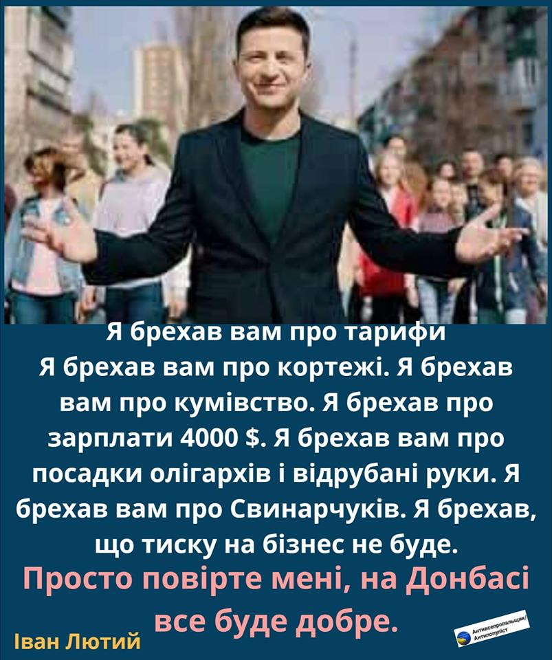
Армія недоотримає 50% необхідного фінансування наступного року »»»
Грошей немає. На Армію немає. Стандарти НАТО? Забудь.Тє. На освіту теж немає, і на охорону здоров"я немає. І на багато чого ще немає. А на пріпізідєнта є, і на бабушку його теж є. Але баригі все одне папередники. І не переплутай.тє.
У Польщі заявили, що Зеленський “зливає” Україну »»»
06.10.2019
Зеленський зібрав силовиків на нараду з підготовки до розведення військ в Донбасі »»»
І чхати воно хотіло на якісь протести! "Нам своє робить!"
UPD: У ЗМІ з’явився список населених пунктів Донбасу, з яких планують відвести ЗСУ »»»
Весь Донбас стає "сірою" зоною!
UPD: Зеленский готов рискнуть и развести войска на Донбассе по всей линии фронта - Пристайко »»»
UPD: Населення в Золотому підтримує розведення військ, - заступниця міністра оборони Фролова »»»
UPD: Я в Золотому. Біля клубу натовп.. військові, поліція, представники Зе... “Я під танки ляжу, але не дам вивести війська”… »»»
UPD: "Вранье на каждом шагу", - Арестович жестко высказался о "мудром плане зеленых" »»»
UPD: Хомчак: Під час розведення військ ЗСУ відійдуть на позиції 2016 року »»»
Богдан за зразком путінських пропагандонів розповідає в мережі про "проплачене віче" »»»
Звідки методички?
Теперішній Міністр розвитку економіки Милованов у 2015 році заявляв, що НЕ РОЗУМІЄТЬСЯ НА ЕКОНОМІЦІ (!!!) »»»
UPD: ...і книжок він теж НЕ ЧИТАЄ »»»
Кого понапризначали! У когось ще є сумніви у тому, що цей уряд прийшов не піднімати Україну, а ЗНИЩУВАТИ її???
А тим часом "Паліщук на матациклє" "Моніка на велосипеді"... [FB]
07.10.2019
Зеленський доручив спростити переміщення громадян через лінію розмежування на Донбасі »»»
Для людини дотичної до прикордонної служби це перекладається так. Догляд речей і вантажівок – відмінять. А ОРДЛО – це чотири сотні кілометрів неконтрольованого нами кордону. Російська розвідка і контрабандисти стоячи аплодують президентові України! Який подарунок!
Зеленський призначив ексдружину Портнова суддею Оболонського районного суду »»»
Зеленський призначив свого помічника Єрмака і голову «Укрпошти» в наглядову раду «Укроборонпрому» »»»
Головний поштар країни (той самий, що призначив собі шалену зарплату і це при збитковості самої пошти) і помічник презЕдента, що веде бізнес з оточенням Путіна тепер відповідатимуть за озброєння армії?
Новосад готується ліквідувати університети »»»
UPD: Держзамовлення у вишах скасовується - МОН »»»
Нєчєго вам бєсплатно образованіє получать! Хватіт, дураком жить і безопаснєє, і счастлівєє!
08.10.2019
Подвійні стандарти Геруса: за імпорт електроенергії з Росії. Але проти її поставок з ЄС через Бурштинський енергоострів »»»
Зеленський в США зустрічався з Кисліним, причетним до відмивання грошей "регіоналами" »»»
Зеленський повертає Януковичу конфісковані 1,5 млрд. доларів
09.10.2019
Нове керівництво МОЗ намагається повернути ручне управління фінансами у сфері медицини »»»
Зарплата нового главы ЦИК Олега Диденко за сентябрь составила 738 ТЫСЯЧ ГРИВЕН »»»
Хто керує ДБР: Труба не зміг пояснити, звідки у Портнова інформація про діяльність ДБР »»»
Дівчинки немає, нічого з вами не буде – Зеленський знову зухвало пожартував над поведінкою Мендель »»»
Бидло-жарти нової бидло-влади! Хоча, журналіст, який проковтнув таке хамство й продовжував розмову наче нічого не сталося, мабуть, заслуговує на таке поводження з собою. Четверта влада має гідність, а медіашлюхи - ні!
Кінець епохи кумівства: дружину міністра юстиції призначили заступницею голови Мінцифри »»»
Гончарук объяснил невозможность выполнения предвыборных обещаний Зеленского по снижению коммунальных тарифов »»»
Богдан у 2012 році свідомо програв Росії три мільярди гривень з бюджета України »»»
“Слуга народу” заявив, що видатки на президента збільшились через “еру діджиталізації” »»»
10.10.2019
Зеленський на зустрічі з ветеранами: Вибори в ОРДЛО проводитимуться без присутності українських військ »»»
UPD: Зеленський заявив, що читає прослушку розмов учасників акцій протесту »»»
Прес-марафон Зеленського: онлайн »»»
UPD: Зе-марафон тривав 14 годин! »»»
НАФУЯ?!
UPD: "Марафон" Зеленського побив світовий рекорд »»»
Вдруг аткуда ні вазьмісь паявілся... Гіннес [FB]
Так он воно для чого був увесь цей прес-марафон! Рекордів захотілося! Так рекорди бувають різними: [►]
UPD: Комплекс меншовартості: Зеленський на пресконференції 117 разів згадав Порошенка та його партію »»»
UPD: За словами Зеленського, між попередньою владою і Медведчуком було протистояння, а не дружба, як це подавали в інформпросторі »»»
Правда про брехню Зеленського і його каманди поступово проривається!
UPD: Дякую за бліц: Зеленський грубо відмовився відповідати на запитання про призначення "кварталівців" на державні посади »»»
UPD: Зеленський на зустрічі з журналістами: “Спитайте людей на вулиці: Пашинський бандит? Вам 100% опитаних скажуть, що так!”” »»»
Це щось новеньке! Тепер замість суду винуватість чи невинуватість будемо визначати шляхом опитування на вулиці?
UPD: Зеленський заявив, що він хоче, але йому не дають посадити всіх корупціонерів »»»
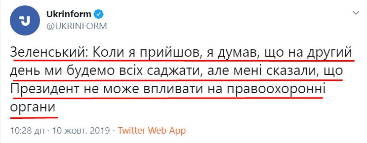
Внізапна аказалась! Ось так, насправді "гарант Конституції" знає цю саму Конституцію! #а_вас_попереджали!
UPD: "Бабин Яр там? Передайте всім тим, хто там загинув, привіт!" - Зеленський гучно осоромився під час свого пресмарафону »»»
UPD: Зеленський збрехав про уповноваженого у справах кримських татар »»»
UPD: Зеленський поширює російські фейки про втому США від України »»»
UPD: На прес-марафоні зеленські розіграли спектакль з підставною тіткою "із народа" »»»
UPD: Справжня історія чи підставна акторка? Хто та жінка, яка бідкалася Зеленському на Філатова? [►]
UPD: “Роблять спеціальні уколи”: Зеленський розказав, як підтримує себе на прес-марафоні »»»
Судячи з того, що він витворяє на посаді президента, йому якісь уколи роблять постійно!
UPD: І ми за все це платимо: На прес-конференції Зеленського спалахнув скaндaл »»»
UPD: Річна зарплата: стало відомо, скільки бюджетних коштів проїли на пресмарафоні Зеленського »»»
UPD: Зеленського викрили в масштабній брехні на пресмарафоні: де сказав неправду »»»
UPD: На Донбасі "пострілюють": Зеленський оконфузився скандальною заявою щодо війни »»»
UPD: Марафон Зеленського як Зе!технологія »»»
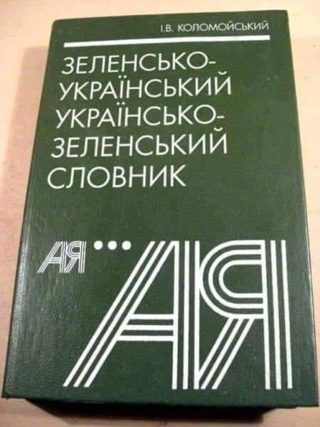
UPD: Зеленський готує українців до прийняття втрати територій »»»
UPD: Суд відправив під арешт співвласника фудкорту, де Зеленський проводив прес-марафон »»»
Гідранту жрачка не сподобалась?
10 жовтня у світі відзначається як День психічного здоров'я. Так, між іншим
Нічого не нагадує?
Зеленський проводив нараду із силовиками на тему "посадок", які "мають сподобатися" людям »»»
11.10.2019
Керівник Офісу Президента зустрівся з послами країн «Великої сімки» »»»
Це з якого такого дива з послами країн зустрічається не перша особа держави, не Міністр закордонних справ, а керівник президентської канцелярії? Тепер кожна секретарша буде керувати країною? На якій підставі???
UPD: Богдан обговорив з послами G7 безпекову ситуацію на Донбасі »»»
А ви думали секретарша з послами буде про степлери й шредери говорити? А от і ні! Секретарша тепер займається питаннями безпеки держави!!! В країну прийшла БІДА!!!
І хто тепер заробляє на війні? »»»
Зеленський призначив людину, яка контролюватиме СБУ »»»
А тепер по пунктах: ця "людина" працювала в СБУ при Януковичі, відсиділа начальником Житомирського СБУ під час Революції Гідності, а вся нерухомість, дорогі автівки і земельні ділянки оформлені на дружину
12.10.2019
Московська пропаганда не тільки не припиняється, а за гідранта навпаки - ПОВЕРТАЄТЬСЯ з новими каналами й новими ведучими »»»
Портнов уже диктує свої умови Зеленському та генпрокурору Рябошапку »»»
Вседозволеність надихає на нові "подвиги"! Ну що, Моніка, може вже настав час таки зателефонувати Баканову "па поводу етого чьорта"?
UPD: Портнов сьогодні вище, ніж Труба в ієрархії впливу: які держоргани пришвидшують капітуляцію »»»
Сын партнера Коломойского Дубилет за первый месяц работы в Кабмине получил фантастическую зарплату »»»
13.10.2019
Ердоган вперше прийняв російську делегацію разом із "депутатами" від Криму »»»
Біда навіть не в тому, що після зустрічей з гідрантом Ердоган почав спілкуватися з представниками російських окупантів, а в тому, що з боку пизидента НІЯКОЇ реакції на цю ситуацію немає!!! Черговий провал особисто Зеленського (після його зустрічі з Ердоганом це сталося!) і особисто Пристайка! А може й не провал, а якраз навпаки. Усе іде по плану. По кремлівському плану!
Суд поставив під сумнів легітимність інавгурації Зеленського »»»
Коли невігласи й ідіоти приводять до влади невігласів й ідіотів!
Фільм про Лесю Українку не отримав державного фінансування »»»
14.10.2019
День Захисника України - керівництво держави проігнорувало церемонію вшанування загиблих на Донбасі »»»
Портнов закликав амністувати беркутівців і розпочати слідство проти учасників Революції Гідності »»»
МОВА НЕ ПОТРІБНА: Влада СКАСУВАЛА іспит з української мови для держслужбовців »»»
Кінець епохи бідності: у Держбюджеті-2020 суттєво скоротять видатки на медицину, освіту й соцвиплати »»»
15.10.2019
Головним питанням на переговорах у Мінську був особливий статус для ОРДО і ОРЛО »»»
До Києва приїхав кремлівський пропагандист, який підтримує агресію РФ проти України »»»
Тепер вони тут почувають себе як вдома!
Влада готує законопроект про подвійне громадянство »»»
16.10.2019
"Кабмін саботує "мовний" закон": Княжицький вимагає закласти в бюджет кошти на впровадження української мови »»»
Міністр економіки хоче перезапуску Ради Нацбанку »»»
Той самий міністр, який любить "вітрильний спорт і сальсу", якого "не цікавить Україна, не читає книжок, і нічого не розуміє в економіці" хоче перезапуску Ради Нацбанку. Зеленська влада руйнує Україну за всіма напрямками із божевільною швидкістю!
Супрун спіймала МОЗ на спробах закупівлі ліків за цінами, завищеними у 30 разів »»»
Перша зарплата генпрокурора виявилася майже в 4 рази більша за оклад »»»
В обмін на можливість Коломойського заробляти в РФ Україна зобов'язалася поступитися Кремлю »»»
Судова реформа по-зеленськи:
Верховна Рада підтримала судову реформу Зеленського »»»
UPD: Судова реформа "слуг народу" позбавила українців права на правосуддя »»»
UPD: Арахамія про лист Заходу щодо судової реформи: Не будемо реагувати »»»
UPD: У Украины могут отобрать Безвиз: Зеленский решил свернуть начатую при Порошенко судебную реформу »»»
UPD: Безвіз, прощавай? - Тарас Чорновіл »»»
"Сітка" в Telegram: Як Зеленському допомагають "російські технології" »»»
17.10.2019
Зеленський чи то в Литві, чи то в Латвії
Пресслужба Офісу президента переплутала Латвію і Литву у дописі про візит Зеленського »»»
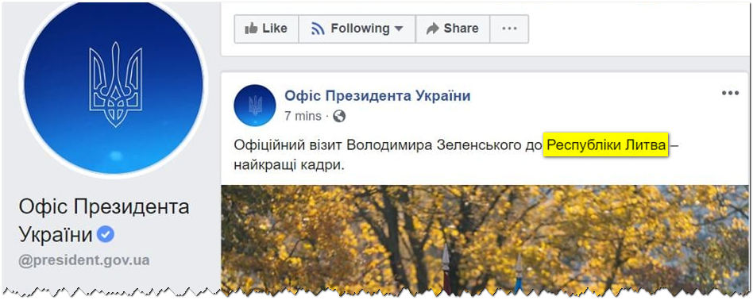
Феєричний топографічний кретинізм! Це ж яке щастя, що Зеленський в Австрію не поїхав! Так би ще на протилежному боці Землі опинився! От тільки зеленській прес-службі на чолі з "дєвочкой Мєндель", схоже, так і не судилося дізнатися, як же правильно пишеться: ІраН чи ІраК?
UPD: Сотруднику, который "отправил" Зеленского в Литву вместо Латвии, подарили атлас »»»
"Як дитина!" У сеймі Латвії зняли Зеленського, який грався молотком: українці сміються »»»
"Шифр Разумкова", або Як управляють голосуванням "слуг" »»»
Оце й усе, чому їх у трускавцях навчали!
“Слуга народу” вимагає у Кличка 8 квартир в Києві »»»
Депутат від «Слуги народу» розповсюджував у Верховній Раді квитки на «Вечірній квартал» »»»
Прем’єр-міністр України Олексій Гончарук зізнався в тому, що отримував диплом юриста “недержавного зразка” і не є доктором філософії в галузі права »»»
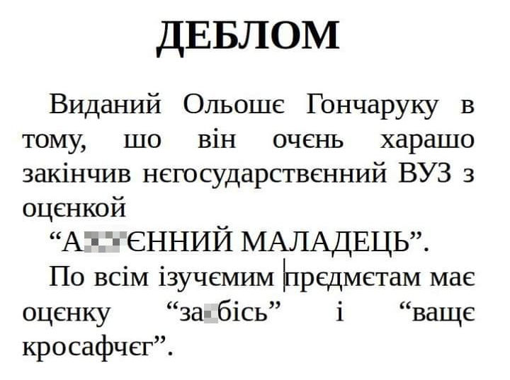
Перепутали Торонто и Оттаву, Литву и Латвию, у премьера диплом какой-то чебуречной. Вы серьезно думаете, что эта шайка неучей и бездарностей сделает стране хорошо?
Держава заплатить Портнову 7 млн: Апеляційний суд залишив попереднє рішення без змін »»»
Київський суд зняв арешт з акцій російського банку »»»
Рада ухвалила закон про захист викривачів корупції »»»
Часи сталінських стукачів повертаються!
«АрселорМиттал Кривой Рог» выводит из Украины почти 11 миллиардов гривен »»»
UPD: Міжнародний тютюновий гігант зупинив фабрику в Прилуках »»»
Виборчий округ №210, Прилуки, ІІ тур. ЗЕ - 77,5%. Порошенко - 20,4%. Святкуй.Те!
UPD: Економіст розповів, як Зеленський одним махом “зробив всіх інвесторів разом” »»»
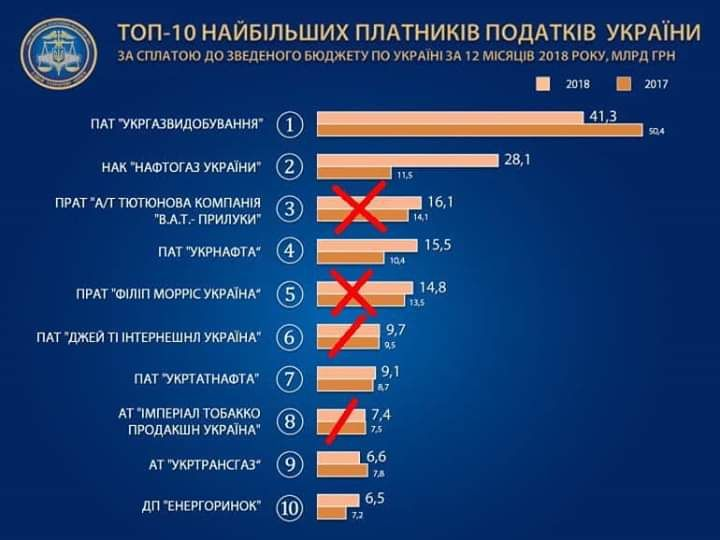
За 5 років Пороха в Україні побудовано 219 нових заводів, а за 3 місяці Зе з України втекли 3 найбільші інвестори з першої десятки!
UPD: Инвесторы потянулись из Украины грустным клином »»»
18.10.2019
У Білому домі визнали, що тиснули на українську владу, щоб вона розслідувала справу проти Байдена »»»
Саме для цього й $400 млн. заморожували
Україна на краю прірви! »»»
Яременко: Україна готова йти на компроміси з РФ »»»
Команда Зе, за замовленням олігархів, що пов'язані з РФ, розпочала нищення тих реформ, які започаткувала стара влада »»»
З Держбюджету зникли додаткові виплати пенсіонерам та підвищення зарплати військовим »»»
UPD: Команда Зеленського украла з держбюджету 20 млрд.гривень [►]
П'ять депутатів-мажоритарників зі "Слуги народу" можуть отримати з держбюджету 820 мільйонів гривень субвенцій »»»
Тарас Чорновіл: “Такого ж не було навіть при Кучмі і Януковичі! »»»
«Слуга народу» таємно протягла законопроект про продаж землі »»»
Нехай балотуються до Верховної Ради: Арахамія зухвало відповів послам країн G7 щодо судової реформи »»»
Апаршин призначений керівником директорату з питань національної безпеки та оборони в ОПУ »»»
Буде тепер офіційно керувати розпродажем "зайвого" армійського майна!
ДБР визначило майданівців, усіх захисників нашої країни, як злочинців »»»
Провладний "1+1" займається пропагандою в стилі російського телебачення »»»
19.10.2019
Опубліковано закон про скасування переліку заборонених до приватизації об'єктів »»»
Готується тотальний розпродаж України!
“Слуга народу” взяла собі у помічники слідчого, який “кришував” наркоторгівлю »»»
Это начало конца: золотовалютный фонд Украины внезапно опустел »»»
Глава ФДМУ Сенниченко приховує майно від декларування і суміщає посади »»»
Понапризначали!
Набув чинності скандальний закон про субсидії для іноземних кіновиробників »»»
"Слуга народу" зареєструвала законопроект про скасування закону про люстрацію »»»
Як люди Коломойського переслідують Петра Порошенка. Розслідування програми "Спостерігач" [►]
20.10.2019
Новий генпрокурор вимагає змінити закон про люстрацію »»»
Компанія російського олігарха Дерипаски видобуває унікальний кварцит для військових РФ в Україні »»»
Фирмы жены Баканова фигурировали в деле СБУ »»»
У народного депутата от партии "Слуга народа" Александра Ткаченко в заповедной зоне Киева найдена незадекларированная вилла [►]
Горіла
Учасники "Вечірнього кварталу" заспівали жартівливу пісню про підпал будинку колишньої очільниці Нацбанку Валерії Гонтаревої. До насміхання з вчиненого проти неї злочину було залучено Національний заслужений академічний український народний хор імені Григорія Верьовки »»»
UPD: "Браво!" - Коломойський оцінив номер "Кварталу-95" про підпал будинку Гонтаревої »»»
UPD: "Квартал 95" щодо критики за номер про будинок Гонтаревої: "Ми будемо з гордістю займатися своєю справою" »»»
No comments!
UPD: Народний артист України Анатолій Матвійчук про номер “Горіла хата” 95 Кварталу: “Це яскраве підтвердження психічного збочення тих, хто придумав цей номер, і тих, хто реготав у залі…” »»»
UPD: Уляна Супрун: За місяць має відбутися концерт хору Верьовки до Дня гідності. Але з гідністю хор та його керівництво не дуже пов’язані... »»»
UPD: Чекалкін Дмитро : Саме люди з відключеними мізками вибрали в президенти клоуна під час війни »»»
UPD: Вибачалися перед Кадировим, вибачайтеся перед українцями: Порошенко про номер “95 кварталу” »»»
Щоб вибачитися за свою помилку потрібно бути Порошенком, а зеленським це недоступно. СлабО!
UPD: Номер "95 Кварталу" про Гонтареву негативно впливає на інвестиційний клімат в Україні, - міністр економіки Милованов »»»
UPD: Дуже сумно, що міністр економіки в Україні - дебіл, - Коломойський про реакцію Милованова на номер "Кварталу 95" »»»
UPD: "Я цього і не приховую, що я дебіл", - Милованов »»»
UPD: Бородянский извинился перед Гонтаревой за хор Веревки »»»
UPD: "Це хамство вищого ґатунку", - Бородянський відповів на образи Коломойського »»»
UPD: Міністр культури заявив, що не застосовуватиме до хору Верьовки адміністративних покарань »»»
UPD: З'явилось відео скандального звернення хору Верьовки до росіян »»»
UPD: "ХАЛДЕЇ": те, чого ви не знали про хор Верьовки »»»
UPD: После номера «Квартала» послы на Западе уже отрапортовали: власть в Украине действительно перешла в руки олигархов-реваншистов »»»
21.10.2019
Знайомтесь: відтепер ОЦЕ - радник секретаря Ради нацбезпеки й оборони з питань реінтеграції та відновлення Донбасу: »»»
UPD: А це - той самий Сивохо з тим самим Левченком від Партії Регіонів на тому самому Антимайдані в 2004 році:
Вот вам, новиє ліца!
UPD: Радника РНБО з питань реінтеграції Донбасу можна замовити для проведення корпоративів »»»
Ціна питання лише 150 тис. рублів
UPD: Сивохо вимагає виплачувати пенсії на окупованих територій: “Ми повинні створити комфортні умови…” »»»
UPD: Сивохо убежден, что у нас внутренний конфликт, а жители Донбасса страдают от недоразумений в Украине »»»
Коломойский получил монополию на всю воду в Украине »»»
У Європарламенті побачили регрес України за нової влади »»»
22.10.2019
Японський вояж українського гідранта
Зеленський взяв участь в інтронізації імператора Японії »»»
UPD: Зеленська вирядилася в кольори імператорської сім'ї, що в Японії допустимо тільки для членів родини імператора і вважається мало не образою для монарха
Зеленські обидва реально такі довбонуті, чи роблять це навмисно?
UPD: Співробітники Офісу президента захотіли показати перевагу Зеленського над його попередниками. Вийшло, як завжди... »»»
UPD: Мендель знову осоромилась під час інтерв’ю Зеленського у Японії »»»
Жахливий непрофесіоналізм! [►]
UPD: Виявляється, Вова привіз на екскурсію до Японії ще й своїх дітей!
А що тут такого? За державний кошт - гріх не скористатися! Зе-барани ще й в долоньки поплескають від радості! А от відпочинок Пороха на Мальдівах ЗА СВОЇ кошти - ото, дійсно злочин! Хай ДБР займається тим "баригою"!
UPD: В Японії згорів замок XIV століття зі списку спадщини ЮНЕСКО »»»
Після першої поїздки Вовочки до Франції згорів Нотр-Дам де Парі. Після візиту Моніки до США - в Каліфорнії розпочалися масштабні пожежі. Тепер замок Сюрі! Карма?
UPD: На борту літака прем'єра Японії сталася пожежа »»»
Один раз - це випадковість, а от три рази... Може відправити Вовочку на екскурсію в Кремль? Назавжди!
UPD: Понад 1400 мінімальних пенсій: стало відомо, у скільки обійшовся візит Зеленського у Японію »»»
Уряд зобов'язав "Нафтогаз" поставляти газ до ОРДЛО без урахування боргів »»»
Субсидії не для всіх: Кабмін змінив правила отримання допомоги на сплату послуг ЖКГ »»»
А тим часом в Україні "знижуються" тарифи на комуналку. Усе, як обіцяли:
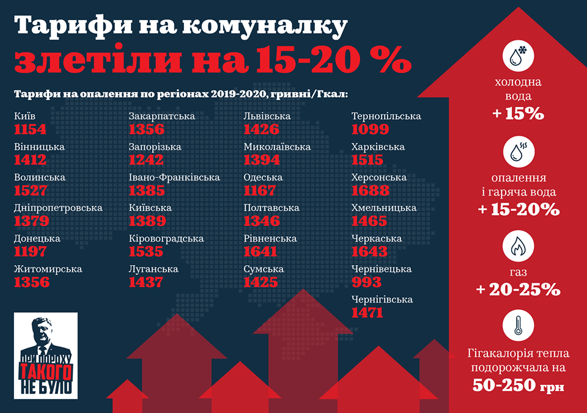
Довоювалися! Вперше з часів Дебальцівської трагедії втрати ЗСУ у війні на Донбасі перевищили втрати бойовиків самопроголошених терористичних псевдореспублік "ЛНР" і "ДНР" »»»
UPD: Довоювалися-2: Як недокомплект і корупція знищують українську армію »»»
23.10.2019
Радником секретаря РНБО став іще один "кварталівець" »»»
Депутат від "Слуги народу" Шевченко взяв участь у телешоу російських пропагандистів »»»
UPD: Виступ Шевченка у російському ток-шоу може бути використаний спецслужбами »»»
40% роста ВВП уже не будет: Кабмин переосмыслил свои прогнозы »»»
"Корпоративне" захоплення держави: Зеленський проявляє схильність до авторитаризму – Financial Times »»»
Холодний душ від Європи: захід оцінив роботу нової влади і натякає на рішучі дії »»»
ОБСЕ обнаружила десятки «Градов» из РФ по линии отвода войск »»»
Зеленські з цього приводу традиційно язика в ж@пу засунули
24.10.2019
"Слуг народу" звинувачують в отриманні хабара »»»
UPD: Можлива корупція "Слуг народу" в Раді: САП відкрила справу »»»
UPD: НАБУ закрыло дело о возможном получении взяток 11 депутатами Рады от "Слуги народа" »»»
А ніхто й не сумнівався, що саме так і буде!
Поліграф. Шоу для зебілів
UPD: “Поліграф-шоу”: Арахамія розповів, як перевірятимуть ” слуг народу” »»»
UPD: “Дешеве шоу”: політтехнолог показав докази, що Дубинський поліграф не проходив »»»
UPD: Профанація: президент Міжнародної ліги поліграфологів проаналізував допит Арахамії та Дубінського »»»
UPD: Під час перевірки Дубінського не було виконано жодних вимог з тестування на поліграфі »»»
UPD: Поліграфолог про перевірку депутатів: "Не варто перетворювати це у розвагу" »»»
UPD: Західні партнери діагностують у нас шизофренічний стан - експерт про "поліграф-шоу" »»»
Тепер влада в Україні виглядає саме так:
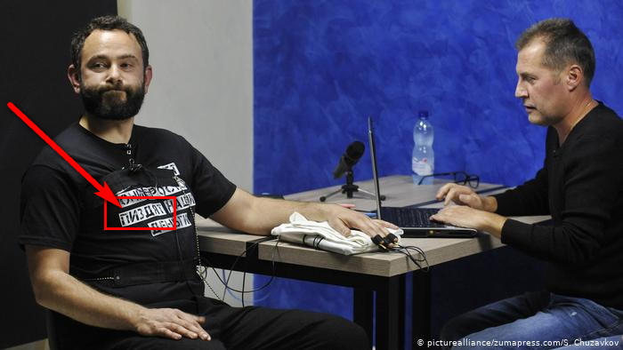
Так-так! З матюками на футболці в прямому ефірі!
Європейський суд з прав людини, зобов'язав Україну виплатити сепаратистці Нелі Штепі 3600 євро »»»
У “Слузі народу” визнали, що їхні депутати поки не хочуть криміналізувати незаконне збагачення »»»
Знову Порошенко винен?
Очільника ДФС Максима Нефьодова підозрюють у корупції »»»
UPD: ГПУ блокує розслідування проти Максима Нефьодова »»»
Рябошапка вважає злочинне угрупування Януковича вигадкою »»»
Все йде по сценарію Портнова, який Революцію Гідності вважає переворотом. Рябошапка вважає злочинне угрупування Януковича вигадкою - Горбатюк
Кабмін Гончарука вже традиційно присвоїв собі досягнення команди Порошенка і Гройсмана у зростанні позицій України в рейтингу DoingBusiness »»»
Збір даних для рейтингу Doing Business завершується кінцем квітня. В чому тут заслуга нового Кабміну???
25.10.2019
Міноборони і МЗС виступили проти подання заявки на ПДЧ у НАТО »»»
Украина потеряла свои места во всех комиссиях и комитетах ПАСЕ »»»
Сина засновника "1+1" Роднянського, який проживає в РФ, призначено радником у Кабміні »»»
Як ботоферми допомагали Зеленському »»»
Зарплати "в конвертах" на мільйон: "Слугу народу" звинуватили в масштабній фінансовій схемі »»»
ДБР узялося за Гройсмана: суд дозволив вилучили в ОП документи про його призначення прем'єром »»»
ДБР спокою немає, взялися за Гройсмана і Яценюка. А за Портнова взялися?
26.10.2019
Україна втратила свої місця в ПАРЕ »»»
27.10.2019
Показові виступи Зеленського у Золотому
Зеленський раптом приїхав до добровольців у Золоте »»»
UPD: Йди в армію і захищай країну: Зеленський нахамив 23-річному учаснику акції “Ні капітуляції”, який з 18 років на фронті, і порекомендував йому... йти в армію! »»» [►]
А сам піти послужити не хоче? Нє, не хоче! Ось так Зеленський читав свою повістку в 2014 році.
Виклик до війська на захист своєї країни - це ж так весело! Ржачка до усирачки!
UPD: Зеленський нахамив добровольцям у Золотому-4 »»»
Лаври Януковича спати спокійно не дають? Вирішив перехамити самого Хама?
UPD: "Вчительки" у Золотому, які просили Зеленського про розведення сил, виявились громадянками РФ »»»
UPD: ...а самої школи, насправді, не існує!
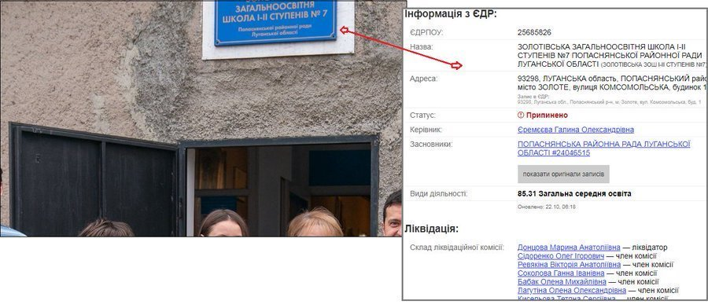
UPD: “Я їх повбиваю”: у Золотому Зеленський спілкувався із помічницями терористів “ЛНР” »»»
UPD: Інформаційна операція в дусі Кремля - Гай про візит Зеленського на Донбас »»»
UPD: Судячи зі спілкування президента з бійцями в Золотому – він не чує аргументи протестів, ігнорує акції та продовжує бути впевненим в своєму месіанстві »»»
UPD: Мені пофіг, з ким буде перемир'я, – Зеленський »»»
UPD: Путін на форумі натякнув, що у нього і Зеленського на Донбасі тепер є “спільний ворог” »»»
І, схоже, наш Вовочка з шефом повністю згоден, що цей лютий ворог і х@йла, і сцикла - українські добровольці!
UPD: Тупість або провокація: Хомчак назвав ветеранів у Золотому "нациками" »»»
UPD: “Зняти санкції”: в МЗС РФ заявили, що Зеленський сам визнав провину української сторони у війні на Донбасі »»»
Цілком логічна заява. Здобули!
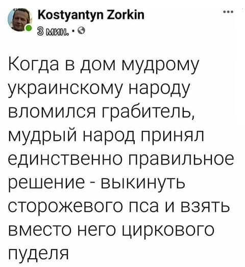
UPD: Павел Нусс: стала известна настоящая причина поездки Зеленского в Золотое »»»
UPD: Зелеботи почали розганяти інформацію про, начебто, кримінальне минуле азовця, якому хамив Зеленський
UPD: Ветерани АТО подали позови щодо розповсюдження ЗМІ неправдивої інформації »»»
UPD: Зеленський пішов за сценарієм Путіна, демонізуючи українську армію та добровольців »»»
Коломойський і Боголюбов через Приватбанк вивели в офшори 470 мільярдів доларів »»»
28.10.2019
Трамп назвав Зеленського “російським президентом” »»»
Оговорочка по Фрейду?
Я люблю вечірки та тролю людей, – Андрій Богдан »»»
"...я адвокат Коломойського, я люблю вечірки, я постійно ходжу в якісь клуби, ресторани і нічні заклади..." А то що я тепер причетний до керування державою - та то пофіг!
Милованов предлагает отменить пенсии »»»
29.10.2019
Розведення військ у Золотому розпочалося »»»
Так, між іншим, в кулуарах інвестиційного форуму... Якби не запитали, про це, насправді, ніхто б і не знав? Епоха відкритості настала?
UPD: 30 населених пунктів повернуться у “сіру зону” »»»
UPD: Зеленский спешит с разведением войск в Золотом из-за тайных обязательств перед Путиным »»»
UPD: Зеленський уже "накерував" на статтю Кримінального Кодексу »»»
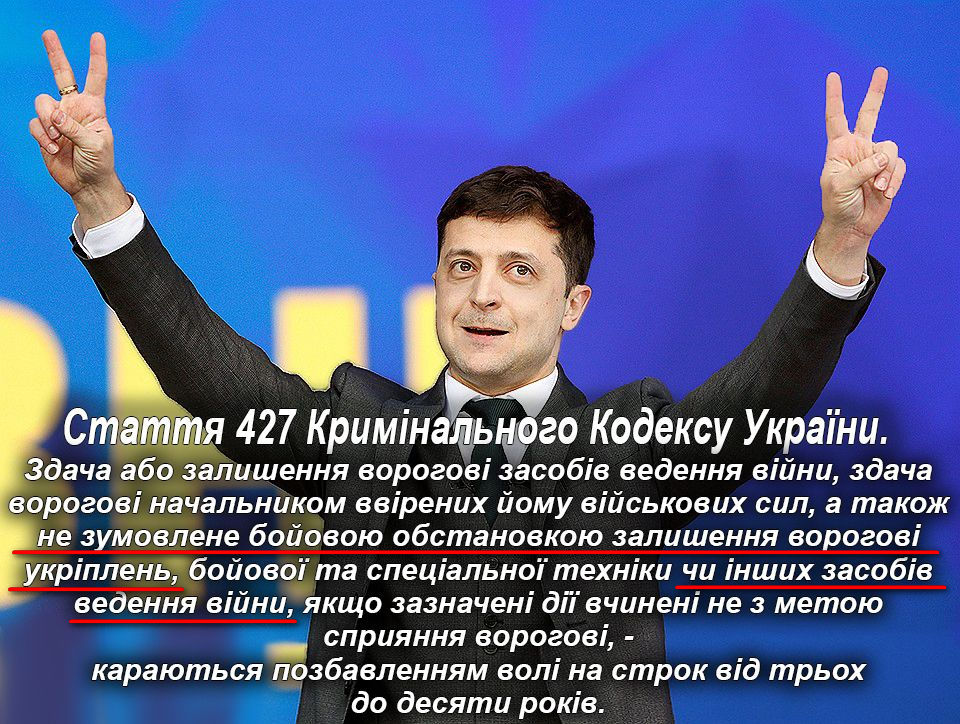
UPD: Під Офісом президента мітингувальники три години скандували "Ні кроку назад!" »»»
UPD: Третій день розведення: вісім обстрілів і один поранений »»»
Тиша, кажете?

UPD: "Це нас розводять, а війська – відводять": Безсмертний вказав на брехню влади »»»
UPD: Оккупанты объявили о проведении на Донбассе совместных учений незаконных вооруженных формирований и сил РФ »»»
UPD: Тривожні новини з Золотого! Ворог не тільки не відійшов, але й ПІДТЯГУЄ штурмовий полк та важку артилерію »»»
UPD: Передайте Зе, що він лoх. За кілометр від нас росіяни нікого не відводять, а навпаки, сюди завезли снайперів зі спецкулями... »»»
UPD: «Бреше в очі»: Зеленський навідріз заперечив обстріли в Золотому »»»
Маріуполь зустрічає Зеленського [►]
Рада відхилила закон, що зобов'язує Генпрокурора мати юридичну освіту »»»
А як же Луценко?
Міністерка Маркарова причетна до виведення зі збанкрутілого «Актив-банку» елітної нерухомості на свою фірму »»»
«Година $100»: На засіданні Ради «слуга народу» Яременко домовлявся про зустріч із повією »»»
UPD: «Слуга народу» Яременко прокоментував свою переписку з повією »»»
UPD: Журналісти не виклали все одразу: з’явився новий скрін з “Тiндeру”, де він питає у 19-20 річної дівчини, скільки їй грошей треба в місяць »»»
UPD: Вино, комбез і $10 тис. на квартиру: жінки нардепа Яременка »»»
UPD: "Закон захищає особисте листування. Той, хто зробив це, заробив від 3 до 7 років. Я не погрожую. Я нагадую про закон і мораль", - нардеп Яременко про секс-скандал »»»
І воно ще щось про закон і мораль варнякає?!
UPD: «Слуги народу» винесли вердикт по Богдану Яременко після скандального листування в Раді »»»
За кнопкодавство нікого не покарано, за цю ганьбу - теж! Попередня Верховна Рада точно була найгірша?
UPD: Катерина Рошук: “Тепер я звертаюся до вас, пане Богдане Яременко. Ви не виправдали довіру народу та мою.” »»»
UPD: Димова завіса: Які провали влади затуляє секс-брехня Яременка »»»
Планочка щодня нижче і нижче. Прямо у ВР жруть, курять, ремигають, др...чать, шлюх замовляють... З країни зробили шапіто на самокаті… »»»
Первый жрал, второй дрочил, третий - карандаш точил,
Эта - губки красила, та - в смартфоне лазила.
Тот билеты продавал, этот - кнопки нажимал.
Шото приняли - а шо? Да какая разница!
Главное, шо лохторату эти Слуги нравятся!
Гончарук: Корупція на найвищому рівні вже відсутня »»»
Ага! Як тільки журнашлюхам заборонили кричати про корупцію з кожного телеканалу, так одразу корупція і зникла!
Друг голови АП Богдана незаконно забудовує 30 гектарів земель МВС під Києвом »»»
30.10.2019
Венгрия заблокировала заявление НАТО по Украине »»»
Черговий провал зеленої дипломатії! А може й не провал, а цілеспрямований саботаж!
Ще один провал зеленських "дипломатів"! Данія дозволила росіянам будівництво «Північного потоку 2» на своїй території »»»
В ООН вимагають від України виплатити репарації ОРДЛО »»»
Чергова "перемога"!
Компания отца Министра обороны получила лицензию на нефтегазовую площадь в Луганской области »»»
Рябошапка виключає екстрадицію Коломойського »»»
Ну як же ж можна шефа вигнати! Нє, так ніззя! Він же громадянин України! От тільки Цемах - теж громадянин України!
Сергій Сивохо: «Є люди, які, перебуваючи там (в ОРДЛО), готові йти на вибори від «Слуги народу» »»»
Зе-команда заявила, що новий Уряд дав Україні Інтернет »»»
"Прішла вєсна, настало лєто - спасіба партіі за ето!"
“Що це було?”: українці в шоці від інтерв’ю “Слуги народу” »»»
Козак Гаврилюк, порівняно з ЦИМ - просто академік!
Держборг за місяць виріс на 1 мільярд доларів — Мінфін »»»
А при клятих баригах, які крали усе, що бачили, він ЗМЕНШУВАВСЯ!
31.10.2019
Комітет Ради не підтримав законопроєкти про зняття депутатської недоторканності »»»
Випускники шкіл з окупованих територій зможуть вступати без ЗНО до будь-якого вишу »»»
Це означає, що Україна вже визнає лугандонські атестати? А "держави", які їх видали, теж визнає?